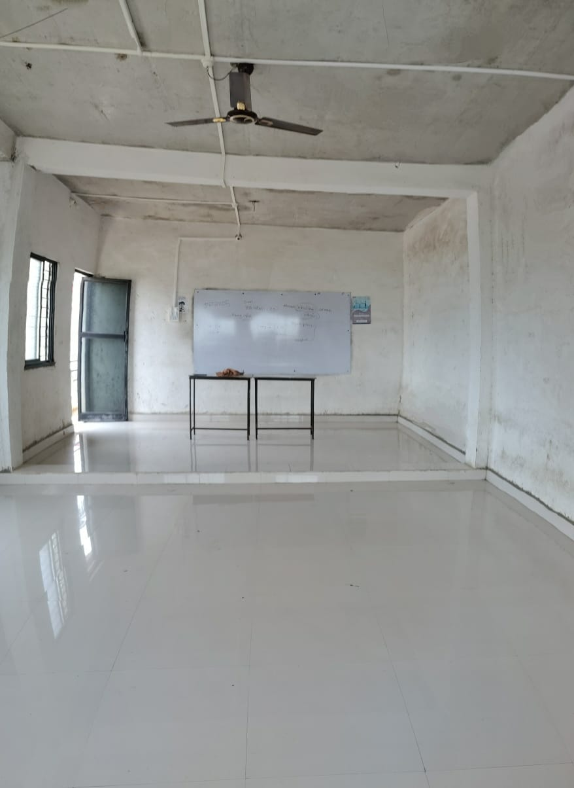

Our Classrooms
Modern, clean, and peaceful spaces to learn and grow.

The classrooms at Kulswamini Technical Institute are designed to create a focused learning environment. Spacious interiors, natural lighting, and a clean atmosphere help students engage better during lessons. Each classroom is equipped with necessary teaching tools like whiteboards, fans, and raised platforms for better visibility.
We believe a well-maintained classroom improves both teaching effectiveness and student concentration.